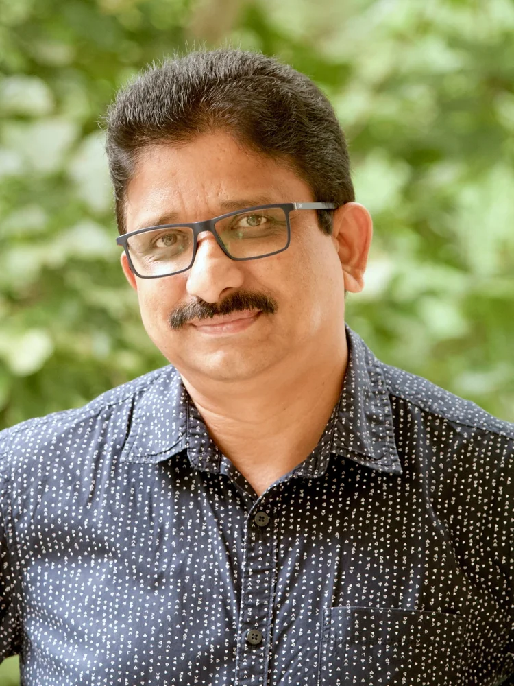

01 / LTEM
Long-Term Ecological Monitoring
Run with NCBS-TIFR, Bengaluru, continuously tracking ecological and climatic change across the campus.
air qualityweathercarbon
Susthira Eco Club is the sustainability initiative of the Department of P.G. Studies and Research in Environmental Science, Kuvempu University, where research, monitoring, and everyday campus life work as one system.
The club cultivates environmental responsibility and scientific awareness among students, researchers, faculty, and the surrounding community, integrating education with research, outreach, conservation, and long-term monitoring.
Guided by the vision of a carbon-conscious, environmentally resilient university campus, Susthira gives students hands-on experience across climate action, biodiversity conservation, waste management, renewable energy, ecological restoration, and long-term environmental monitoring.
It operates less like a student society and more like a working field station, one where the campus itself is the subject of study.
To transform Kuvempu University into a model sustainable campus through education, innovation, research, community participation, and environmental stewardship.
Each initiative feeds the same long-term record, from instrument readings to bicycle lanes.
Run with NCBS-TIFR, Bengaluru, continuously tracking ecological and climatic change across the campus.
Modern instrumentation tracking AQI, PM2.5/PM10, CO₂, temperature, humidity, pressure, rainfall, wind, and solar radiation.
Bicycle-sharing, electric buggies, solar street lighting, and a plastic-free campus programme.
An outdoor classroom built from recycled materials, hosting lectures, workshops, and biodiversity observation.
Campus surveys covering trees, birds, butterflies, insects, and plant diversity, feeding habitat conservation work.
Programmes on adaptation, carbon footprints, net-zero campuses, and the SDGs, with visiting experts.
Segregation, composting, vermicomposting, e-waste awareness, and recycling drives run by students.
School and college awareness programmes, nature camps, eco walks, and campus biodiversity trails.
Green Solutions: Exploring Pollution Management Strategies
Greening the Future — A Pathway Towards Green Campus
Temperature Sensitivity of Photosynthesis in Tropical Forests
Collaborating for Change: Climate-Friendly Networks and Zero Carbon Universities
Tools and Techniques for Long-Term Ecological Monitoring
Environmental Monitoring Techniques
Joint research, training programmes, expert lectures, and sustainable campus initiatives, built with institutions across three continents.
NCBS-TIFR, Bengaluru
CEE, Ahmedabad
EMPRI, Karnataka
Uppsala University, Sweden
University of Greifswald, Germany
ANESCo, Germany
GIZ
Rotary Mid Town, Panaji, Goa
Environmental Monitoring Station established
LTEM programme developed with NCBS-TIFR
Bicycle-sharing & electric buggy mobility
EcoNest outdoor classroom created
National & international workshops delivered
Global research collaborations strengthened
Student-led sustainability across campus
Community environmental awareness raised

Coordinator, Susthira Eco Club · Director, School of Earth & Environmental Science
Professor, Department of P.G. Studies and Research in Environmental Science, Kuvempu University, Shankaraghatta. Leads the club with a vision of integrating scientific research, environmental education, sustainability practice, and community engagement, building pioneering work in monitoring, climate research, and biodiversity conservation.
Students, researchers, faculty, alumni, and community members are all welcome.